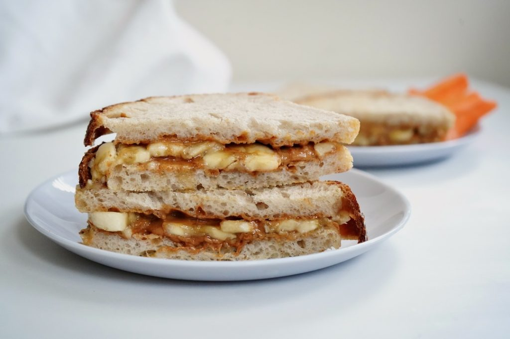

This sandwich can be eaten cold or warm. For a grilled peanut butter banana sandwich, use a panini press. Lighty brush teh outside of the bread with avacado or canola oil or melted butter to create a crispy exterior.
If toasting the bread, go for a very light golden brown. This will allow th sandwich to have some "give" whn you cut or bite into it.